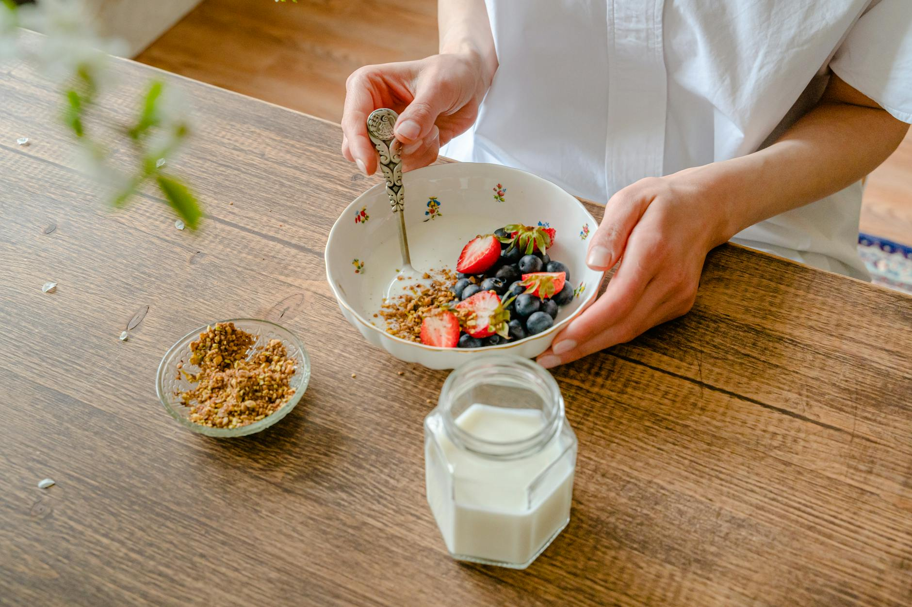

What Daily Habits Help Fight Stress Effectively?
Key takeaways
- In today's fast-paced world, stress can feel like a constant companion.
- It's easy to get caught in a cycle of feeling overwhelmed, but the good news is that small, consistent changes to your daily routine can make a significant difference in managing your stre
- Focus on: Feeling Overwhelmed? Your Daily Routine Might Be the Key to Stress Relief.

Feeling Overwhelmed? Your Daily Routine Might Be the Key to Stress Relief
In today's fast-paced world, stress can feel like a constant companion. It's easy to get caught in a cycle of feeling overwhelmed, but the good news is that small, consistent changes to your daily routine can make a significant difference in managing your stress load. This isn't about drastic overhauls, but rather integrating simple, effective habits that build resilience and promote calm.
Morning Moments: Setting a Positive Tone
How you start your day can profoundly impact your stress levels. Instead of immediately diving into emails or news, try dedicating the first 15-30 minutes to yourself.
Mindful Mornings
This could involve gentle stretching, a few minutes of deep breathing exercises, or simply enjoying a cup of tea or coffee in quiet reflection. Even a short period of mindfulness can help center you before the day's demands begin. Consider trying a guided meditation app for a few minutes. Learning to manage your morning can set a more relaxed pace for the rest of your day.
Hydration and Nutrition
Start your day with a glass of water. Dehydration can exacerbate feelings of fatigue and stress. A balanced breakfast, rich in protein and fiber, can also help stabilize blood sugar and energy levels, preventing midday slumps that can increase irritability.
Midday Reset: Breaks That Recharge
It's tempting to power through your workday, but regular short breaks are crucial for preventing burnout and managing stress.
Step Away
Aim to take a 5-10 minute break every hour or so. Get up from your desk, stretch, walk around, or step outside for some fresh air. This simple act can help clear your head and reduce physical tension. For example, Sarah, a graphic designer, started taking a 10-minute walk around the block every afternoon. She noticed a significant drop in her tension headaches and felt more focused afterward.
Mindful Eating
Use your lunch break as an opportunity to disconnect. Try to eat away from your workspace and focus on your meal. This practice, known as mindful eating, can improve digestion and provide a mental break. Explore quick and healthy lunch ideas that don't require much prep.
Evening Wind-Down: Preparing for Rest
Your evening routine is vital for unwinding and preparing your body and mind for restorative sleep, which is essential for stress management.
Digital Detox
The blue light emitted from screens can interfere with melatonin production, making it harder to fall asleep. Try to put away phones, tablets, and laptops at least an hour before bedtime. Use this time for reading, gentle stretching, or listening to calming music. Prioritizing sleep hygiene is a powerful stress-reduction tool.
Relaxation Rituals
Incorporate activities that help you relax. This could be a warm bath, journaling your thoughts, or practicing gentle yoga. Creating a calming pre-sleep ritual signals to your body that it's time to wind down. Discovering effective relaxation techniques can be a game-changer.
Common Mistakes to Avoid
- Skipping breaks: Thinking you're more productive by not taking breaks often leads to burnout.
- Late-night screen time: The blue light disrupts your natural sleep cycle.
- Ignoring stress signals: Pushing through constant stress can have long-term health impacts.
Actionable Checklist: Start Today!
- Drink a glass of water upon waking.
- Spend 5 minutes on deep breathing or stretching before starting your workday.
- Take a 10-minute break away from your screen mid-morning.
- Eat lunch away from your desk.
- Establish a screen-free hour before bedtime.
Implementing these habits doesn't require perfection. Start with one or two that resonate with you and gradually build from there. Remember, consistency is key. By making small, intentional changes, you can effectively lower your stress load and cultivate a greater sense of well-being. Explore more tips on building healthy habits for a balanced life.
Educational only — not medical advice.
Related posts
Can Daily Routines Really Lower Stress Levels?
Discover how simple daily routines can significantly reduce your stress load and improve your overall well-being. Learn practical tips for a
Read more →
When Should You Eat for Optimal Gut Health?
Discover how meal timing, fiber, and fermented foods can impact your gut health and learn practical tips for a happier digestive system.
Read more →
What's the Best Way to Prepare for Sleep?
Discover effective bedtime routines and wind-down habits to improve your sleep quality. Learn practical tips for a more restful night.
Read more →